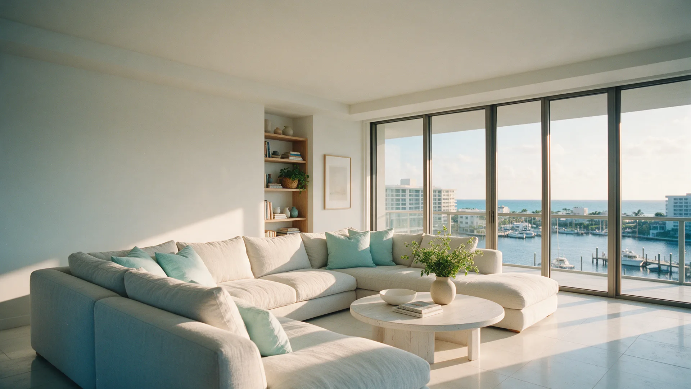
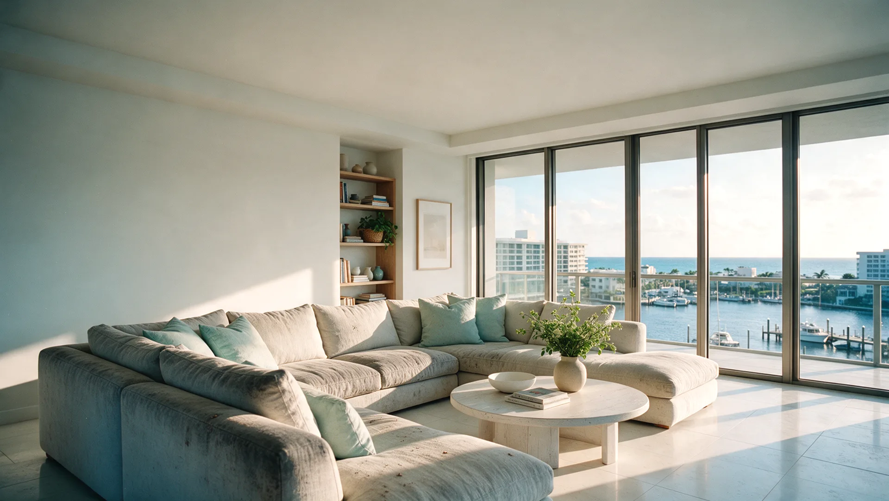

Tile, carpet and upholstery cleaning in Boynton Beach
Upholstery, carpet and tile for Intracoastal condos and golf community homes, from Hunters Run to the marina.
- 240five-star Google reviews
- 15+years in Palm Beach County
- $1M+liability insurance
Who cleans tile, grout and carpet in Boynton Beach?
Harbor Tile & Carpet Cleaning is a locally owned Palm Beach County company, based in West Palm Beach, that cleans tile and grout, carpet, area rugs, upholstery and mattresses in Boynton Beach, removes pet stains and odors, and cleans yacht interiors.
Harbor has 240 five-star Google reviews, carries $1M+ in liability insurance and has served Palm Beach County for over 15 years. Call or text (561) 301-1977, Monday to Saturday, 8:00 AM to 6:00 PM.

Drag to compare. An illustration of a linen sectional in a Boynton Beach condo before and after a deep upholstery clean.
Cleaning services in Boynton Beach
One local crew for the whole house, and the boat.
Tile & Grout Cleaning
Rotary cleaning that lifts the film off the tile and the grey out of every grout line, for kitchens, baths, entries and patios.
Carpet Cleaning
Deep extraction for wall-to-wall carpet, with a 7-step process that removes embedded soil and traffic lanes without leaving a sticky residue.
Area Rug Cleaning
Careful cleaning for area rugs, from everyday wool to the pieces you inherited.
Upholstery Cleaning
Fabric-safe cleaning for sofas, sectionals, dining chairs and mattresses.
Pet Stain & Odor Removal
Treatment for pet accidents and the odors that linger in carpet, rugs and upholstery.
Yacht Interior Cleaning
Discreet cleaning for salons, staterooms, carpet and upholstery aboard, including Harbor Shield protection.
Boynton Beach homes, and what they go through
Condo towers, golf communities and the marina. Here is what we see most often in Boynton Beach.
Light upholstery that gets used
The sofa by the window is where everyone sits. Body oils and everyday soil grey light linen along the arms and seat fronts first.
Condo living
We work around building rules for parking, elevators and work hours. Tell us what your association requires when you book.
Tile and carpet in golf community homes
Large porcelain tile in the living areas and carpet in the bedrooms, each needing its own clean.
Salt air on the Intracoastal
Waterfront humidity and salt air leave a film on floors and fabrics. Regular deep cleaning keeps both bright.
How it works
Request your quote
Use the form below, or call or text (561) 301-1977. Tell us what needs cleaning.
Approve your estimate
You receive a personalized estimate to review and approve before anything is booked.
Get ready
We send a prep sheet when you book, and a reminder the day before your appointment.
The clean, then a check-in
The Harbor crew arrives, does the work and follows up afterwards to make sure you are happy.
Boynton Beach questions, answered
Which Boynton Beach neighborhoods does Harbor serve?
All of Boynton Beach, including Hunters Run, Quail Ridge, Leisureville, Lake Boynton Estates, Chapel Hill, Seacrest, the Boynton Harbor Marina area and the Intracoastal condos, plus nearby Lantana, Manalapan and Ocean Ridge.
Does Harbor clean in condominiums?
Yes. Harbor works around building rules for parking, elevators and work hours. Tell us what your association requires when you book.
Is Harbor Tile & Carpet Cleaning insured?
Yes. Harbor carries $1M+ in liability insurance.
How do I get a quote for cleaning in Boynton Beach?
Use the Get a Personalized Quote form on this page, or call or text (561) 301-1977 Monday to Saturday, 8:00 AM to 6:00 PM.
Can Harbor clean sectionals and dining chairs?
Yes. Harbor offers fabric-safe cleaning for sofas, sectionals, dining chairs, mattresses and outdoor cushions.
Can Harbor remove pet stains and odors?
Yes. Pet stain and odor removal is offered for carpet, area rugs and upholstery.
What are Harbor's hours?
Monday to Saturday, 8:00 AM to 6:00 PM. Closed Sunday.
Get a Personalized Quote in Boynton Beach
Tell us what needs cleaning and we will get back to you with a personalized estimate. Prefer to talk? Call or text (561) 301-1977.
Your request is ready.
Send it to Harbor by text or email. Nothing is sent until you choose.
Text it to Harbor Email it instead